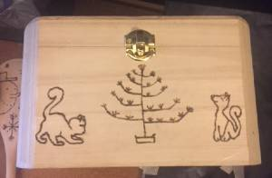

Pyrography
This is the art of burning images onto wood and is one of my husbands many hobbies. He loves making things to give as gifts and only recently offered them for sale to help support the Sea Scout Ship SSS SeaFox. There is only a limited number he can do at a time and so these sell fast. I don't know much about it, but his images always turn out amazing. It does require special tools, but there are lots of introduction books available for beginners.
